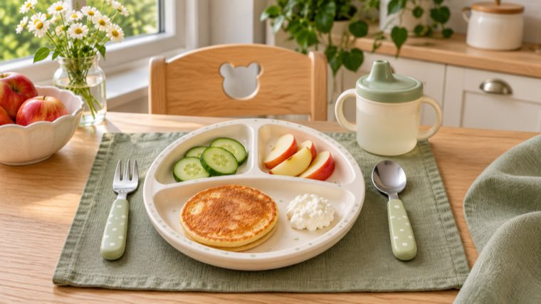
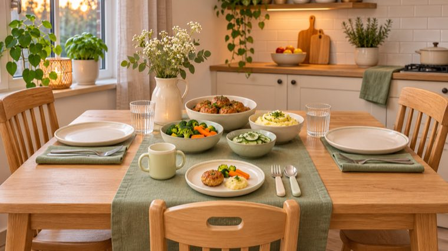
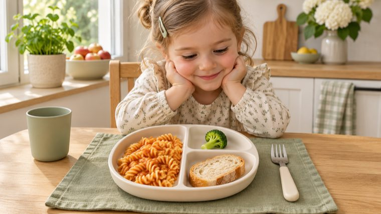
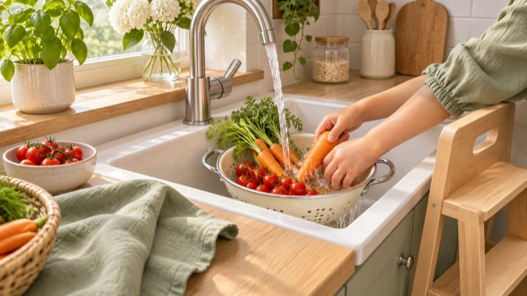
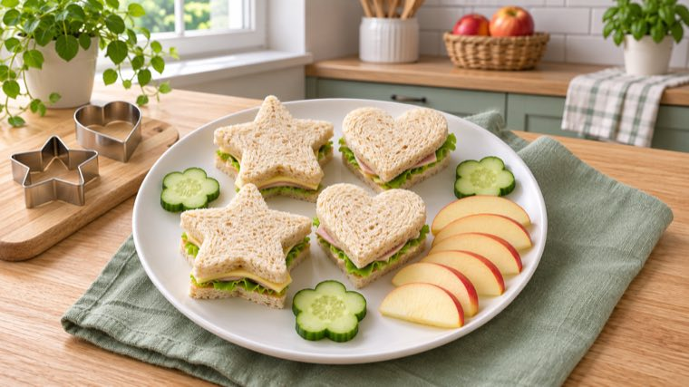
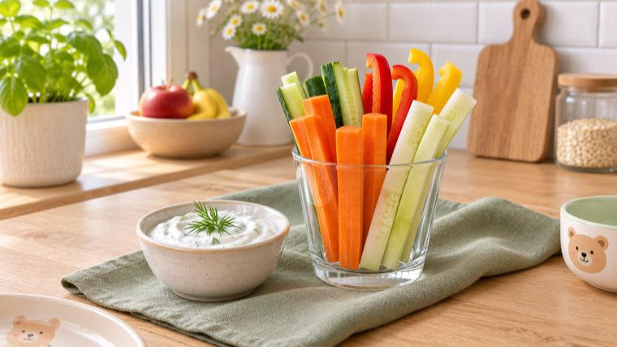

Szykujesz śniadaniówkę, a potem znajdujesz ją prawie nietkniętą? Przy rodzinnym stole znów słyszysz: „Nie lubię”, choć dziecko nawet nie spróbowało? To potrafi zmęczyć i zmartwić.
Ten dodatkowy poradnik marki Wesołe Śniadaniówki pomoże Ci zamienić codzienną walkę w serię małych, spokojnych kroków. Nie musisz wprowadzać ich wszystkich naraz. Wybierz jeden pomysł, który pasuje do Waszego dnia.

Słowo „niejadek” bywa wygodnym skrótem, ale nie opisuje całego dziecka. Jedno nie chce mieszać produktów, inne akceptuje tylko chrupiące warzywa, a jeszcze inne odmawia jedzenia poza domem. Zamiast etykiety spróbuj zauważyć, co dokładnie jest dla Twojego dziecka trudne.
Przez kilka dni możesz zapisywać, jakie produkty dziecko przyjmuje, jak zostały podane i w jakich sytuacjach odmawia. Zanotuj też, co mu pomaga: osobne przegródki, znany kubek albo możliwość samodzielnego nakładania. Takie notatki przydadzą się także podczas rozmowy z pediatrą.
Twoim zadaniem nie jest przekonanie dziecka do wszystkiego przy jednym posiłku. Możesz zadbać o spokojne warunki, proponować różne produkty i pozwolić mu poznawać je we własnym tempie.
Dzieci rozwijają się w różnym tempie. Poniższe przykłady pomogą Ci spojrzeć na zachowanie dziecka z większą ciekawością, ale nie zastępują oceny pediatry, jeśli coś Cię niepokoi.
Maluch może chcieć decydować sam: wybrać łyżeczkę, dotknąć jedzenia albo odsunąć talerz. Może też jednego dnia chętnie jeść produkt, a innego go odrzucić. Zmiana zdania nie oznacza, że musisz natychmiast szukać nowego dania.
Proponuj proste wybory, na przykład: „Wolisz ogórek obok kanapki czy na osobnym talerzyku?”. Nakładaj małe porcje i zostaw możliwość dokładki. Wspieraj samodzielność, ale dopasuj kształt i twardość jedzenia do umiejętności dziecka oraz pilnuj go podczas posiłku.
Przedszkolak może mocno przywiązać się do znanych smaków, marek albo sposobu podania. Kanapka pokrojona inaczej niż zwykle może wydać mu się zupełnie nowa. Dziecko może też chcieć wiedzieć, co znajduje się w potrawie i czy składniki się ze sobą stykają.
Pomaga przewidywalność: powiedz wcześniej, co będzie na stole, i pozwól dziecku zobaczyć składniki. Możecie wspólnie ustalić, gdzie na talerzu położyć nowy produkt. Znana część posiłku daje dziecku możliwość uczestniczenia w nim bez konieczności próbowania nowości.
Starsze dziecko zwykle może więcej powiedzieć o tym, co mu przeszkadza: zapach, konsystencja, wygląd albo sytuacja w szkolnej stołówce. Może też mieć własne zdanie o tym, co chce zabierać do szkoły. Warto go wysłuchać bez poprawiania każdej odpowiedzi.
Zapytaj: „Co sprawiłoby, że tę śniadaniówkę byłoby Ci łatwiej zjeść?”. Ustalcie razem kilka znanych zestawów oraz miejsce na niewielką nowość. Nie porównuj dziecka z rodzeństwem ani kolegami: Waszym punktem odniesienia są jego potrzeby i możliwości.
Nowy produkt to dla dziecka coś więcej niż smak. Najpierw widzi kolor i kształt, potem czuje zapach, a po dotknięciu odkrywa temperaturę i strukturę. Jeśli kilka z tych rzeczy wydaje się nieprzyjemnych lub nieprzewidywalnych, odmowa może być sposobem powiedzenia: „Jeszcze nie jestem gotowe”.
Czasem problemem jest sposób podania. Pomidor w sosie wygląda inaczej niż pomidor w plasterku, a miękka gotowana marchewka różni się od chrupiącej surowej. Dziecko może lubić jeden wariant i nie chcieć drugiego.
Znaczenie może mieć również otoczenie: pośpiech, rozmowa o tym, ile dziecko zjadło, albo komentarze innych osób. Nie musisz zgadywać przyczyny. Obserwuj, pytaj spokojnie i sprawdzaj różne rozwiązania bez nacisku.

Ustal możliwie przewidywalny rytm posiłków i przekąsek, dopasowany do Waszego dnia. Dziecku łatwiej wtedy wiedzieć, kiedy może spodziewać się jedzenia. Jeśli macie pytania dotyczące rytmu posiłków lub dziecko je bardzo mało, omówcie je z pediatrą albo dietetykiem dziecięcym.
Ty wybierasz, co i kiedy proponujesz, a dziecko decyduje, czy i ile zje z podanych produktów. W praktyce możesz przygotować rodzinny posiłek tak, by znalazł się w nim również znany element. Nie musisz po każdej odmowie przygotowywać kolejnego dania na życzenie.
Dorośli przy stole też mogą pokazywać ciekawość wobec jedzenia. Możesz powiedzieć: „Ta papryka jest chrupiąca” albo „Dzisiaj wolę ją pokroić w paski”. Nie musisz robić z własnego talerza przedstawienia ani oczekiwać, że dziecko od razu Cię naśladuje.

Powtarzana ekspozycja to proponowanie dziecku kontaktu z produktem więcej niż raz, w spokojnych okolicznościach. Nie chodzi o codzienny obowiązek zjedzenia kęsa. Produkt można obejrzeć, powąchać, dotknąć, położyć na talerzyku, polizać, spróbować albo zostawić na później.
Nie musisz traktować tych czynności jak sztywnej drabiny. Dziecko może jednego dnia chcieć dotknąć ogórka, a następnym razem tylko na niego spojrzeć. Zauważ jego gotowość i pozwól mu się wycofać.
Wybierz produkt, który łatwo kupisz, na przykład ogórek, paprykę albo jogurt naturalny. Pokaż go w niewielkiej porcji kilka razy w różnych dniach. Jeśli dziecko wyraźnie nie chce, by produkt leżał na jego talerzu, postaw go osobno, tak aby mogło samo zdecydować, czy chce się zbliżyć.
Zmieniaj jedną drobną rzecz: ogórek w plasterku, w słupku albo obok sosu jogurtowego. Nie obiecuj sobie konkretnego wyniku po określonej liczbie prób. Celem jest spokojna okazja do poznania produktu, a nie zaliczenie zadania.
Do posiłku dodaj coś, co dziecko zna i zazwyczaj akceptuje. Obok może pojawić się mała porcja nowego produktu. Znane jedzenie pozostaje dostępne także wtedy, gdy nowość zostanie nietknięta.
Zapytaj, czy nowy produkt ma leżeć na talerzu, w przegródce czy obok. Możliwość wyboru miejsca nie oznacza, że dziecko musi go spróbować. Jeśli propozycja wywołuje napięcie, wróć do łatwiejszego kontaktu, na przykład wspólnego obejrzenia produktu podczas zakupów.

W sklepie daj dziecku jedno proste zadanie. Może znaleźć ogórka, wybrać między jabłkiem a gruszką albo włożyć znany produkt do koszyka. Dla starszego dziecka ciekawym zadaniem może być porównanie dwóch opakowań jogurtu i wybranie tego, który wykorzystacie do sosu.
W domu pokaż, co będziecie robić, i zaproponuj udział bez obowiązku jedzenia efektu. Dziecko może umyć warzywo, mieszać sos lub ułożyć produkty w pudełku. Jeśli woli tylko patrzeć, to też jest udział we wspólnym przygotowaniu posiłku.
| Wiek | Na zakupach | W kuchni z dorosłym |
|---|---|---|
| 2–3 lata | Wskazuje znany owoc albo wkłada wybrany produkt do koszyka. | Myje warzywo pod nadzorem, miesza składniki łyżką lub układa serwetki. |
| 4–6 lat | Wybiera między dwoma produktami i pomaga znaleźć je na półce. | Rwie sałatę, smaruje pieczywo odpowiednim narzędziem lub nakłada sos do miseczki. |
| 7–12 lat | Pomaga ułożyć krótką listę i sprawdza, czy macie potrzebne produkty. | Przygotowuje prostą kanapkę, miesza sos i kroi miękkie składniki narzędziem dobranym do umiejętności, pod nadzorem dorosłego. |
Dostosuj zadania do konkretnego dziecka, nie tylko do jego wieku. Dorosły odpowiada za bezpieczeństwo przy ostrych narzędziach, gorących naczyniach i urządzeniach. Przed przygotowaniem jedzenia umyjcie ręce oraz umyjcie owoce i warzywa pod bieżącą wodą.

Śniadaniówka nie potrzebuje misternych dekoracji. Czasem wystarczy pokroić pieczywo w trójkąty, a ogórka w słupki, jeśli taki kształt odpowiada dziecku. Możesz też użyć małej foremki do kanapki, ale zachowaj odkrojone kawałki do wykorzystania w domu.
Kolor potraktuj jak zaproszenie do rozmowy, nie jak zadanie do wykonania. Na przykład obok znanej kanapki połóż kilka kawałków czerwonej papryki w osobnej przegródce. Zapytaj, czy dziecko woli je obok pieczywa, czy w małym pojemniku.
Dipy dają możliwość samodzielnego decydowania o smaku i ilości. Zmieszaj jogurt naturalny z drobno posiekanym koperkiem albo podaj sam jogurt, jeśli dziecko woli prostą wersję. Sos możesz umieścić osobno, a dziecko zdecyduje, czy chce w nim coś zanurzyć.
Nie ukrywaj nowego składnika w znanym daniu, jeśli dziecko pyta, co w nim jest. Powiedz, co dodałaś, i zostaw możliwość wyboru. Zaufanie przy stole buduje się także przez takie drobne rozmowy.
Produkty wymagające chłodzenia przechowuj zgodnie z informacją na opakowaniu. Jeśli pakujesz do śniadaniówki jogurtowy dip lub inny łatwo psujący się produkt, zadbaj o odpowiednie chłodzenie do czasu jedzenia.
Jedno zdanie nie rozwiąże każdej trudnej sytuacji. Może jednak zmienić atmosferę i pokazać dziecku, że słuchasz jego odpowiedzi. Wybierz słowa, które brzmią naturalnie w Waszym domu.
| Zamiast mówić | Możesz powiedzieć |
|---|---|
| „Zjedz jeszcze trzy kęsy.” | „Możesz zdecydować, ile teraz zjesz.” |
| „Nie odejdziesz, dopóki nie spróbujesz.” | „Nowy produkt jest tutaj, jeśli zechcesz go poznać.” |
| „Twój brat już dawno to zjadł.” | „Każdy poznaje jedzenie we własnym tempie.” |
| „Jak zjesz warzywo, dostaniesz deser.” | „Warzywo jest częścią posiłku. Nie musisz go teraz próbować.” |
| „Przecież to pyszne, nie wymyślaj.” | „Widzę, że Ci nie odpowiada. Co w nim zauważasz?” |
| „Nie ma powodu, żeby się tego bać.” | „To wygląda dla Ciebie na coś nowego. Możemy położyć to osobno.” |
| „Znowu nic nie jesz!” | „Widzę, że zostawiłeś większość. Porozmawiajmy później, co Ci pasowało.” |
| „Zobacz, zrobiłam to specjalnie dla Ciebie.” | „Przygotowałam też coś, co znasz. Możesz wybrać, od czego zaczniesz.” |
Jeśli zdarzy Ci się naciskać, nie musisz się obwiniać. Możesz wrócić do rozmowy: „Przepraszam, naciskałam. Następnym razem postaram się dać Ci więcej spokoju”. Taki prosty powrót jest konkretnym sposobem na zmianę atmosfery.
Potraktuj plan jak propozycję, a nie test dla dziecka. Wybierz jeden nowy produkt, który łatwo znaleźć w Biedronce lub Lidlu, na przykład ogórek. Jeśli dziecko już go zna, wybierz inny produkt; jeśli potrzebuje więcej czasu, zostań przy jednym kroku przez kilka dni.
Zapisz kilka produktów, które dziecko zwykle akceptuje, i sposób ich podania. Zapytaj, co lubi w swojej ulubionej śniadaniówce. Nie komentuj, że wybór jest zbyt mały.
Poproś dziecko o wybór jednego znanego produktu do posiłku, na przykład pieczywa albo sera. Ustalcie, jak ma zostać podany. Dzięki temu plan zaczyna się od czegoś przewidywalnego.
Pokaż wybrany nowy produkt na półce. Dziecko może go wskazać albo włożyć do koszyka, ale nie musi tego robić. Możecie powiedzieć sobie, jaki ma kolor lub kształt.
Połóż produkt na kuchennym blacie podczas przygotowywania jedzenia. Jeśli dziecko chce, niech go obejrzy z bliska. Nie proponuj próbowania jako warunku dalszej zabawy czy posiłku.
Umyjcie produkt pod bieżącą wodą. Dziecko może pomóc albo obserwować. Powiedz, co robisz, i pozwól mu zakończyć udział, kiedy chce.
Podaj znany posiłek i połóż niewielką porcję nowości na osobnym talerzyku. Zapytaj wcześniej, gdzie dziecko chce ją zobaczyć. Jeśli nie chce jej przy swoim miejscu, postaw ją dalej na stole.
Pomyśl, czy przy stole było spokojniej i co dziecku ułatwiło uczestnictwo. Nie oceniaj tygodnia wyłącznie po tym, czy zjadło nowy produkt. Zapisz jeden pomysł, który warto powtórzyć.
Pokaż produkt w innym, bezpiecznym dla dziecka kształcie: na przykład ogórka w słupku zamiast plasterka. Zapytaj, który wygląd woli. Znany element posiłku nadal pozostaje dostępny.
Zaproś dziecko do wykonania jednego zadania z tabeli odpowiedniej dla jego umiejętności. Może ułożyć kawałki na talerzyku albo przygotować serwetki. Podziękuj za pomoc bez pytania, czy teraz wreszcie spróbuje.

Podaj niewielką miseczkę znanego sosu lub jogurtu naturalnego obok produktu. Dziecko może zanurzyć w nim znany składnik, nowy produkt albo nic. Nie zamieniaj maczania w ukryty obowiązek spróbowania.
Zapytaj, czy nowość ma znaleźć się na wspólnym półmisku, osobnym talerzyku czy w przegródce pudełka. Uszanuj odpowiedź, również jeśli dziecko wybierze większy dystans. Chodzi o możliwość spokojnego kontaktu.
Wspólnie spakujcie znany zestaw. Jeśli dziecko się zgadza, dodajcie niewielką porcję nowości osobno; jeśli nie, zostawcie ją w domu na inny raz. Po powrocie zapytaj o wygodę jedzenia, bez przesłuchiwania o każdy kęs.
Wybierzcie sytuację, która była dla dziecka najłatwiejsza: zakupy, mycie, oglądanie lub układanie. Powtórzcie ją bez podnoszenia poprzeczki. Dziecko może potrzebować czasu, by poczuć się swobodnie z tym samym krokiem.
Zapytaj: „Co było dla Ciebie w porządku, a co chcesz zrobić inaczej?”. Zapisz odpowiedź i wybierz jeden pomysł na kolejny tydzień. Jeśli pojawiły się trudności, które Cię martwią, zabierz notatki na konsultację z pediatrą.
Umów konsultację, jeśli niepokoi Cię sposób jedzenia dziecka, jego wzrost lub masa ciała, albo jeśli lista akceptowanych produktów staje się coraz krótsza. Warto też zgłosić częsty ból brzucha, wymioty, ból podczas jedzenia, trudności z gryzieniem lub połykaniem oraz kaszel albo krztuszenie się przy posiłkach. Pediatra pomoże ocenić sytuację i zdecydować, czy potrzebna jest dalsza pomoc.
Powiedz lekarzowi również, jeśli posiłki regularnie wywołują silny lęk lub cierpienie dziecka albo jeśli unikanie jedzenia utrudnia mu codzienne funkcjonowanie. Zabierz notatki o produktach, sposobie ich podania i sytuacjach, w których pojawiają się trudności. Nie próbuj samodzielnie stawiać diagnozy na podstawie tej poradnikowej listy.